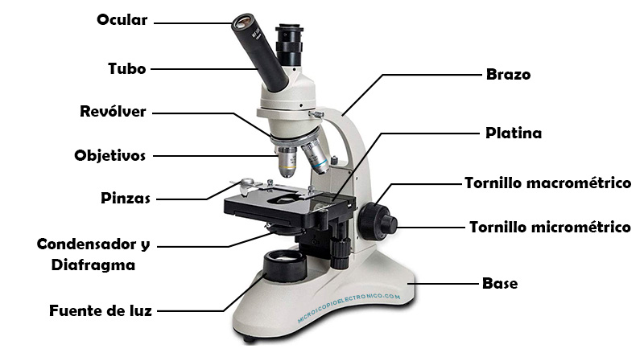

Imagenes de Gatos
Parrafo 1 Parrafo 2 Parrafo 3 Parrafo 4 Parrafo 5Haz click aqui para ver mas imagenes de gatos
dddddddddddddhdhdhdhdhdhhdhdhdhdhdhhdhdhdhdhdhhdhdhdhdhdhdhdhdhdhdhdhhdhdhdhdhdhdhdhhdhdhdhdhd
Parrafo 1
Un texto es una composición de signos codificados en un sistema de escritura que forma una unidad de sentido. También es una composición de caracteres imprimibles (con grafema) generados por un algoritmo de cifrado que, aunque no tienen sentido para cualquier persona, sí puede ser descifrado por su destinatario original. En otras palabras, un texto es un entramado de signos con una intención comunicativa que adquiere sentido en determinado contexto.
Parrafo 2
Las ideas que comunica un texto están contenidas en lo que se suele denominar «macroproposiciones», unidades estructurales de nivel superior o global, que otorgan coherencia al texto constituyendo su hilo central, el esqueleto estructural que cohesiona elementos lingüísticos formales de alto nivel, como los títulos y subtítulos, la secuencia de párrafos, etc. En contraste, las «microproposiciones» son los elementos coadyuvantes de la cohesión de un texto, pero a nivel más particular o local. Esta distinción fue realizada por Teun van Dijk en 19
Parrafo 3
El nivel microestructural o local está asociado con el concepto de cohesión. Se refiere a uno de los fenómenos propios de la coherencia, el de las relaciones particulares y locales que se dan entre elementos lingüísticos, tanto los que remiten unos a otros como los que tienen la función de conectar y organizar.
Parrafo 4
Otra noción importante es que los textos (y discursos) no son solo "monologales". En lingüística, el término texto sirve tanto para producciones en que solo hay un emisor (situaciones monogestionadas o monocontroladas) como en las que varios intercambian sus papeles (situaciones poligestionadas o policontroladas) como las conversaciones. El texto contiene conectores y signos, etc.
Parrafo 5
Se trata de una cantidad de enunciados hilados entre sí y ordenados de acuerdo con una intención comunicativa (como explicar, narrar, describir o argumentar). Para ello, se emplea un sistema concreto de signos, que se conoce como lenguaje, y, dentro de dicho sistema, un código concreto que se conoce como lengua o idioma
Lista de Gatos
Cosas que los gatos aman
- El Sol
- El Agua
- El Alimento
- El Sol
- El Agua
- El Alimento